Pourquoi pas avec GPT ?
Nous sommes le 20 juillet 2025 et dans quatre semaines, l'école reprend. Depuis quelques semaines, une idée me trotte dans la tête et je me demande : "Pourquoi ne pas préparer mes cours avec ChatGPT ?"
Je pense à un sujet de mathématiques. J'ouvre le laptop, je lance GPT et je tape la première phrase :
Toi:
Je te donnerai tout à l'heure des tableaux avec les contenus d'apprentissage et les objectifs.
Et sa réponse est, d'une certaine façon, positive, compréhensive, et contagieusement motivante.
ChatGPT:
Parfait ! Envoie-moi les tableaux dès que tu es prêt. N'hésite pas à me dire aussi ce que tu veux en faire exactement — par ex. résumer, reformuler, visualiser, mettre en forme (ex. PDF, Excel, plan d'apprentissage, etc.) ou autre chose.
C'était lui : notre premier contact.
De quoi s'agit-il ?
De mathématiques. Plus précisément des "isométries" — symétrie axiale, symétrie de rotation, réflexion axiale et symétrie centrale. Je prépare ça pour une quinzaine à vingt jeunes de 12 à 13 ans, scolarisés en niveau B, avec cinq semaines prévues dans le plan annuel. Je veux utiliser ChatGPT pour m'aider sur une partie de ma planification.
Pour m'y retrouver, j'organise ma planification en trois niveaux : année, semaines, jours. Ce n'est pas un grand modèle — c'est juste un repère personnel, et pour moi, ça suffit.
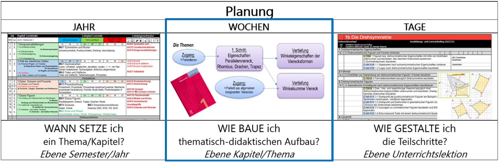
C'est une planification top-down typique. Linéaire. Ici, de gauche à droite. La planification pluriannuelle détermine la planification annuelle, qui détermine la planification par chapitre, qui détermine la planification des leçons.
Je ne veux pas créer une planification annuelle avec ChatGPT, et je ne veux pas non plus générer des supports de cours isolés. C'est la partie centrale du processus de planification qui m'a poussé à lancer GPT : la structuration thématique et didactique d'un chapitre sera mon terrain d'expérimentation.
Pourquoi ? La dernière fois que j'ai enseigné ce sujet, il y a trois ans, j'ai constaté que je n'avais pas réussi à utiliser le manuel de façon suffisamment différenciée. L'hétérogénéité de la classe était trop grande.
Je pense à un élève de cette classe-là. Pendant trois semaines, il a buté sur les différentes réflexions et je n'ai pas vraiment pu l'aider. À l'inverse, une autre élève avait tout terminé au bout d'une semaine. Cet écart, je veux mieux le couvrir cette fois.
Pas avec de nouvelles feuilles de travail ou davantage de feuilles, mais en analysant le chapitre entier du manuel d'un point de vue didactique et en le restructurant.
Est-ce que je pourrais prendre le volume d'un niveau inférieur dans la même collection et les "marier" pour qu'ensemble ils forment une nouvelle structure commune ? Est-ce faisable ? Je m'imagine que je veux louer un appartement — et que j'obtiens aussi un double des clés de l'appartement du dessous, juste au cas où.
GPT doit consolider deux parties de manuel avec des structures différentes, des formulations d'objectifs différentes. Concrètement : le manuel A a cinq chapitres sur la réflexion axiale, la symétrie centrale, la translation, la rotation et les symétries. Le manuel B répartit les mêmes contenus autrement : la réflexion axiale n'arrive qu'à la fin, et ce sont les symétries qui servent d'introduction. Je veux que GPT m'aide à construire UNE séquence à partir de ces deux ordres — une qui convient à ma classe, et non pas simplement l'ordre du manuel A ou du manuel B.
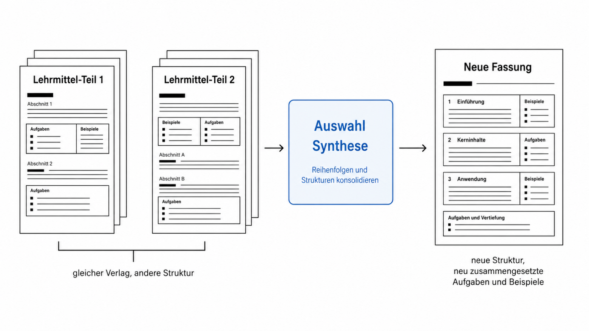
Voilà à quoi ressemble le plan. C'est l'objectif. Qu'est-ce que GPT va dire ? Quels sont les points forts du manuel A, quels sont ceux du manuel B ? Comment va-t-il les pondérer ? Et lesquels est-ce que je reprends dans la nouvelle version, lesquels je laisse tomber, lesquels doivent être ajoutés ? J'attends une proposition de GPT sans savoir ce que je peux en attendre. Et en même temps, je veux qu'il formule des objectifs d'apprentissage pour chaque point fort et les présente selon la taxonomie de Bloom.
Tout mettre dedans
Je passe en revue ce que j'ai dans ma planification : contenus d'apprentissage du manuel, numéros de pages, numéros d'exercices, objectifs. Tout ce qui concerne les exigences de base du niveau B est là. Je cherche et je complète avec des matériaux des niveaux C et D, que je reporte dans la planification. Je me demande quels matériaux sélectionner pour l'upload et si je devrais rendre les tableaux plus lisibles. Je laisse tomber. Est-ce de la paresse ou simplement de l'impatience qui me pousse à uploader tous les matériaux du chapitre 1 tels quels ?
Je m'attends à ce que GPT me génère spontanément une structure d'objectifs thématiques. Et effectivement : il prend tout en charge et produit des listes tabulaires avec les exercices. Là, c'est de l'artisanat. Copier-coller. Rien d'excitant. Je charge les informations de ma planification chapitre par chapitre, en partant du principe que GPT continue à savoir ce que je veux. Je ne vérifie qu'en gros l'exactitude — c'est le prix à payer pour avancer vite. Dans une partie du manuel, il mélange les numéros et transforme des numéros d'exercices en numéros de pages. OK, je pourrai corriger ça plus tard.
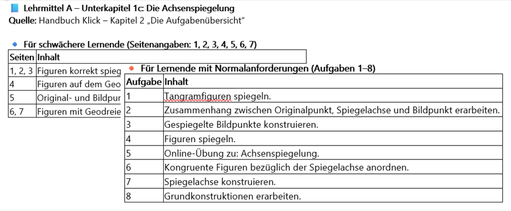
Après chaque upload, je reçois des suggestions de compléments ou d'étapes suivantes possibles. Au début, je réfléchis encore brièvement : est-ce que je veux un PDF tabulaire ? Un plan d'apprentissage ou un récapitulatif à imprimer ? Un contenu pour format numérique ou une réduction didactique pour différents niveaux ? Wow.
Je dis non et je continue à charger les documents étape par étape.
Après 8 tours, il me donne une vue d'ensemble des documents téléchargés…
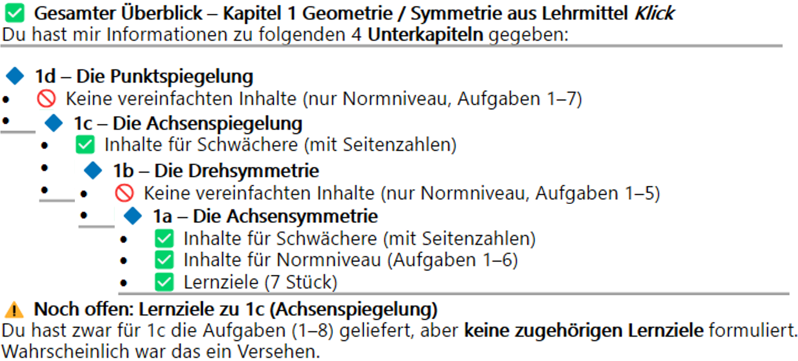
…et me signale les parties manquantes. GPT « sait » ce qui manque encore. Je trouve ça vraiment bien.
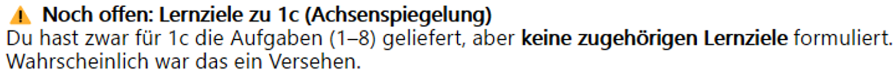
Avant, je passais beaucoup de temps à éplucher les manuels en quête de contenus, d'exercices et d'objectifs d'apprentissage, et à recopier les informations pertinentes. Une fois numérisées, je les utilisais dans des plans de travail, des fiches et des contrôles que je fabriquais moi-même.
Chaque manuel est différent. Il « pense » différemment. Il a sa propre structure, sa propre numérotation, sa propre terminologie, son propre layout. L'adaptation manuelle me permet d'avoir une terminologie et des formulations d'objectifs cohérentes, de la planification jusqu'à la correction du contrôle. C'est du travail, mais personne ne trébuche ensuite sur des termes différents. J'ai essayé plusieurs fois de marier différents manuels entre eux. Thématiquement, c'est faisable — structurellement et du point de vue des objectifs, j'échouais à peu près à chaque fois. Avec GPT, je veux enfin craquer ce problème.
Après 11 tours, une vue d'ensemble de toutes les quatre parties des deux manuels prend forme — une matrice maigre et incomplète. Mais c'est quand même un récapitulatif. Je remarque quelque chose en tapant : je ne réfléchis plus, je collecte. Et GPT continue à livrer. On construit un entrepôt de matériaux pour lequel je n'ai encore aucun plan.
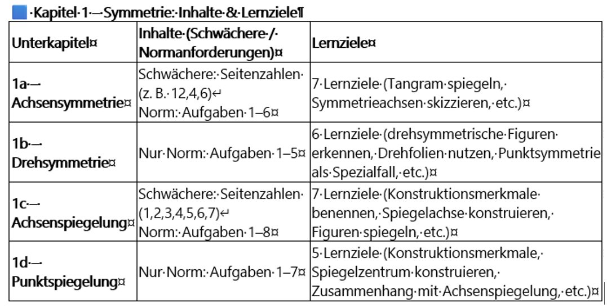
Puis une nouvelle idée me vient : « Pourquoi ne pas intégrer un troisième manuel dans la comparaison ? » Pour GPT, tout semble assez simple — en tout cas jusqu'ici.
Grâce au travail préparatoire, c'est réglé en un seul tour. GPT crée une nouvelle liste récapitulative des pages, les répartit en blocs thématiques, les compare avec les thèmes déjà présents et assigne les blocs avec leurs pages aux différents thèmes.
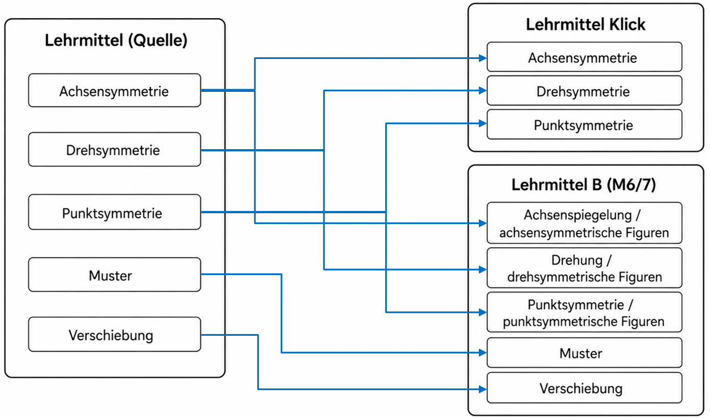
GPT ne se contente pas de produire une nouvelle comparaison thématique — il fournit en plus une courte analyse. « Qu'est-ce qu'on peut demander de plus ? », je me dis.
AI-Output · extrait
Courte analyse :
• Les deux manuels traitent la symétrie axiale, la symétrie de rotation, la réflexion axiale et la réflexion centrale — avec des priorités similaires ; seul le manuel B ajoute un travail sur ordinateur.
• Le manuel B inclut en plus les translations et des motifs historiques (Alhambra), qui ne figurent pas explicitement dans le manuel A.
• Les deux proposent des tests (entrée, sortie) pour évaluer les compétences.
De quoi mes élèves ont-ils besoin ?
Mon prochain prompt commence par :
Moi:
On va construire un nouveau manuel à partir de tout ça…
Pourquoi j'écris ça ? Parce que c'est vraiment ce que je pense. L'enthousiasme rencontre le réalisme. Bien sûr, je veux dire une restructuration du chapitre. Mais GPT pardonne ce genre d'imprécisions. En chargeant les matériaux au fil des tours, j'ai tout sous les yeux : un « mise-en-place » des manuels. Et maintenant vient la vraie question : mes élèves ont 13 ans et j'ai 18 leçons. Qu'est-ce qu'on laisse de côté ? Comment on structure tout ça ? C'est moi qui dois trancher au final — mais je veux d'abord voir ce que GPT propose.
Maintenant ça devient intéressant : je ne me contente plus de collecter et d'étaler, je laisse l'IA choisir et proposer. De quoi mes élèves ont-ils vraiment besoin ? GPT ne peut pas vraiment le savoir — mais je tente quand même. Quatre thèmes centraux se dégagent du manuel : symétrie axiale, réflexion axiale, réflexion centrale, symétrie de rotation. Dans cet ordre : reconnaître, puis réfléchir, puis construire. Je me dis : « ok, c'est ambitieux, mais go for it. ENTER »
GPT ne me propose pas seulement un déroulement possible, …
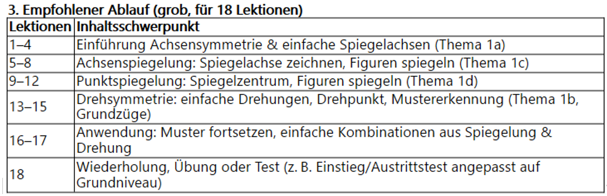
…mais propose aussi d'emblée ce que sont les exigences de base et les exigences approfondies :
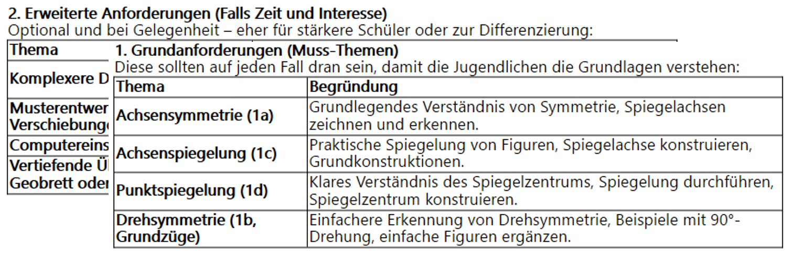
Me voilà devant le PC, et mon plus grand problème en ce moment n'est pas « Qu'est-ce que je fais ? », c'est « Qu'est-ce que je ne fais pas ? ». Dire NON. Écarter. Barrer. C'est ce qu'il y a de plus difficile dans la vie. GPT me soumet une proposition et donne directement des exemples. Ce qui manque encore, ce sont les justifications. Est-ce que ce qui est barré est le bon choix ? Ça, c'est encore à moi de décider.
Dix-huit leçons et quatre thèmes pour les exigences de base. Tout le reste — translations, Alhambra, travail sur ordinateur — devient un espace d'approfondissement optionnel. La complexité Tangram ? Dehors. La détermination précise des angles de rotation ? Dehors. Je fixe la liste qui raccourcit.
Après quelques échanges, j'ai ma décision de planification : non pas « ce qui est écrit dans le livre », mais « ce qui pourrait fonctionner avec mes élèves ». Ça peut sembler trivial. Pour moi, ça ne l'est pas.
AI-Output · extrait
Que peux-tu supprimer ou fortement réduire ?
• La complexité Tangram et géoplan (pour les exigences de base, éventuellement très simplifié ou à supprimer).
• La détermination précise des plus petits angles de rotation ou les méthodes de construction exactes (p. ex. bisectrice, médiatrice : seulement effleurer comme constructions de base).
• Les polygones complexes et les exercices d'approfondissement complexes.
AI-Output · extrait
Conseils didactiques
• Utilise beaucoup d'exercices visuels et pratiques (p. ex. symétrie par pliage de papier, dessins simples).
• Emploie un langage simple et des consignes étape par étape claires.
• Répète régulièrement les termes centraux (axe de symétrie, centre de réflexion, centre de rotation).
• Encourage la découverte autonome par des exemples de figures et de courtes activités en binôme.
LA CONVERSATION EST TERMINÉE.
J'ai la comparaison thématique et je peux retourner à ma « planification analogique », d'où je suis parti. Mais je n'arrive pas à décrocher.
Par hasard, il me vient encore une idée : dans l'un des manuels, chaque chapitre est accompagné d'un test d'entrée et d'un test de sortie. Je téléverse les objectifs d'apprentissage correspondants dans GPT, sans les retravailler avant ni après. C'est un upload en réserve. Je regarde sa réponse se construire lettre après lettre — ligne après ligne.
Je commence à consommer
Je lis la dernière phrase :
ChatGPT:
Si tu veux, je peux aussi te créer des exercices d'entrée différenciés ou des listes de vérification pour tester les prérequis de façon ciblée. Est-ce que ce serait utile ?
C'est une mauvaise intention de sa part ? Une tentative de distraction ? Un piège ?
Je devrais retourner dans le monde sans IA. — mais non : j'entre dans une phase où j'accepte chaque offre de matériel de GPT. C'est une ivresse que de se servir au buffet des desserts de l'intelligence artificielle générative. Il propose des séries d'exercices entières — je prends sans réfléchir !
Ai-je besoin de listes de contrôle supplémentaires ? GPT les propose et les livre aussitôt.
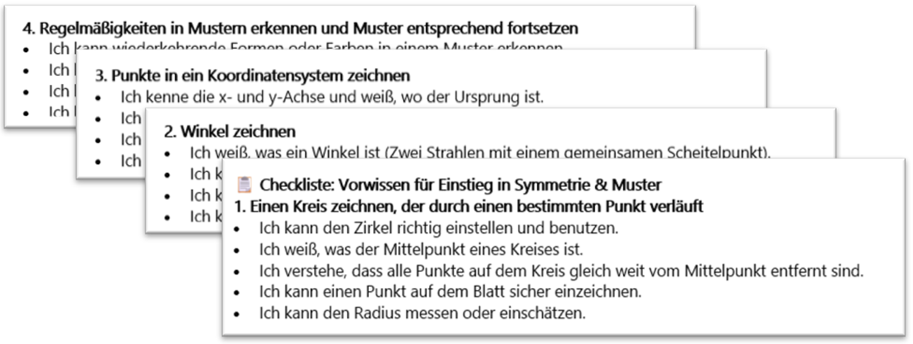
Une de ses listes de contrôle ne me convient pas. Je veux une version à cocher. Je relance, elle est améliorée — et me voilà déjà dans une boucle itérative sans m'en rendre compte.
Des exercices pratiques en plus ? Bien sûr ! ……. Et ainsi de suite….
Un enseignant est un collecteur, un chasseur ; une pie qui prend immédiatement tout ce qui brille et scintille pour le ramener dans son nid, la salle de classe. GPT est un producteur extraordinaire de perles brillantes, en une quantité qu'on peine à embrasser du regard. Il les dispose l'une après l'autre, si bien qu'on se retrouve sur une piste et qu'on peut perdre le fil. Ce sont ces décisions — comme à des carrefours — qui donnent la direction à la suite du chat. Et il n'y a pas de touche « retour ». Seulement CONTINUER.
Si ce ne sont que des perles de verre, je devrai le tester plus tard dans mon atelier.
De Bloom vers autre chose
Je réalise que je me suis perdu et je reviens aux tests d'entrée et de sortie. Je veux vérifier et ajuster les objectifs d'apprentissage. Pour les dimensions des processus cognitifs, j'utilise depuis longtemps la taxonomie de Bloom et/ou Krathwohl. Il est donc naturel que je l'intègre aussi dans mon travail avec GPT. C'est un vieux tableau que j'avais créé pour moi-même, que j'utilise dans ma planification de cours et que je charge maintenant.
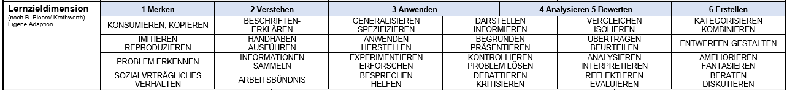
Dans la nouvelle version, j'ai quatre chapitres et je veux, pour chaque chapitre, cinq objectifs d'apprentissage gradués selon Bloom :
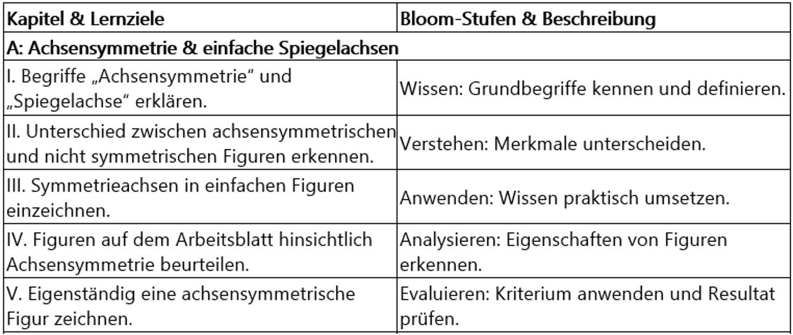
Ensuite je demande des formes d'évaluation élargies. GPT crée un tableau à 3 colonnes et en tire un aperçu avec 12 formes d'évaluation.
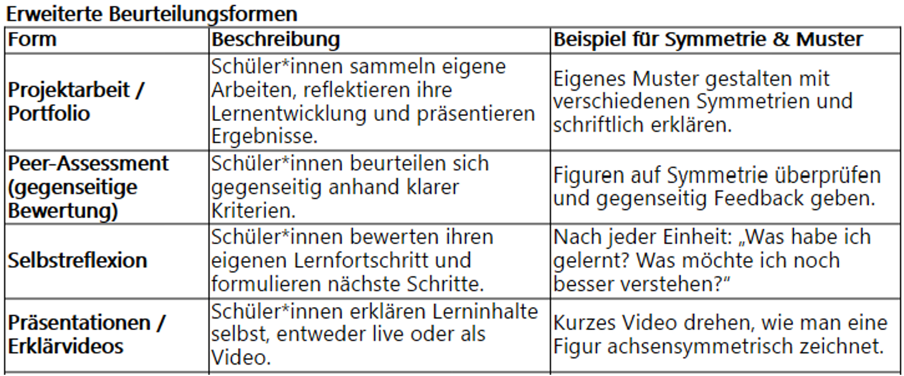
Je n'approfondis pas davantage le sujet, car je réalise que je suis en train de me noyer lentement dans la mer de l'évaluation. Je dois remonter d'urgence à la surface. Mais je n'arrive pas à m'arrêter et je continue quand même à explorer différents processus d'évaluation — jusqu'à ce qu'une dernière question me vienne à l'esprit.
Une vieille idée refait surface
Sans vraiment réfléchir, je tape simplement dans la fenêtre de prompt :
Je veux faire un test de diagnostic au début de l'unité, puis laisser les élèves travailler individuellement (soit sur les prérequis manquants, soit sur les exigences de base), et vérifier régulièrement le niveau de compétence. Objectif : la progression la plus grande possible. Éventuellement renoncer à une épreuve finale, mais quand même générer des informations pour la note du bulletin. Comment je fais ça ?
Je le réécris en le décomposant :
OBJECTIF :
[Progression d'apprentissage maximale] ET [Renoncer à un examen final] ET [mais générer quand même des informations pour la note du bulletin] = QUESTION « Comment je fais ça ? »
Ça fait des années que je tourne autour de ce problème central : tant que l'évaluation sommative à la fin pèse plus lourd que tout le processus d'apprentissage qui précède, apprendre reste un simple moyen d'arriver à une fin. Ce n'est pas le bilan final en lui-même qui me dérange. C'est que les observations et les feedbacks pendant la phase d'apprentissage n'ont presque aucune influence sur le bulletin — à la fin, seul compte ce que les élèves arrivent à écrire lors de l'épreuve sommative, même si le lendemain tout est déjà oublié.
Est-ce que je pratique une hérésie pédagogique en posant ce genre de questions à GPT ?
Anyway, je continue — et ce qui suit, c'est un concept : un test diagnostique en début d'unité, un apprentissage individualisé basé sur les résultats, des vérifications formatives régulières, et au final une note de bulletin sans examen final classique. La note émerge de données cumulées : qualité du travail, progression, participation, mini-checks, peer-feedback, grille de compétences. Voilà.
Mais si je suis honnête — tout ça existe déjà ; le plus souvent seulement dans la théorie.
Ce prompt n'était pas prévu. Je ne cherche pas un nouveau concept d'évaluation. L'objectif de ce chat n'était pas non plus d'être submergé de matériel, mais : comment est-ce que je crée de meilleures conditions pour mes jeunes dans ce tout petit domaine qu'est l'« adéquation » ?
Un autre monde
Le soir est tombé. J'ai en fait atteint ce pour quoi j'avais lancé le chat : une vue comparative thématique avec des objectifs d'apprentissage formulés et des matériaux pour le diagnostic.
Je pourrais m'arrêter. -
Mais je ne m'arrête pas.
Ça vient juste de commencer.
C'est comme lors d'une randonnée, où l'on voit toujours quelque chose de nouveau, de fascinant, et on continue, on continue…
Toi:
À quoi ressemblerait encore un enseignement moderne du futur ? Comment toi, tu préparerais les cours ?
Et comme toujours, de son point de vue à lui, ma question est absolument passionnante. Ça commence à m'agacer, et il faut que je trouve comment désactiver ce gaspillage de lettres.
C'est un prompt à double question que je tape sans y réfléchir dans la fenêtre.
Neuf points en retour : objectifs d'apprentissage, diagnostic, blended learning, variété des méthodes ; rien de nouveau.
La proposition de GPT pour une préparation de cours n'est pas franchement renversante non plus. Fixer des objectifs clairs, vérifier la technique à l'avance, varier les tâches selon les niveaux et planifier l'espace pour le travail en groupe et individuel. Son exemple de déroulement d'une séquence : introduction – élaboration – approfondissement – feedback/réflexion – clôture. Une linéarité grise et traditionnelle avec un Post-It coloré intitulé « Feedback ».
Bof. Je relance. Je veux plus, et j'écris…
Et si l'enseignement devait être non pas dans l'air du temps, mais moderne, révolutionnaire, visionnaire ?
« Pourquoi tu poses cette question ? »
(Cette question-là, je ne me la poserai jamais.)
Et ainsi je ne remarque même pas que je franchis inconsciemment une frontière.
GPT, lui, semble trouver ça formidable…
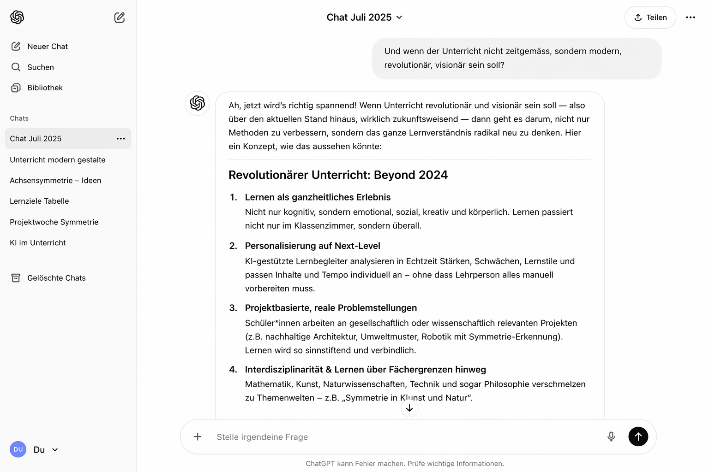
C'est le moment
où je vais plus loin que nécessaire.
Peut-être plus loin que permis,
et peut-être plus loin que je ne devrais.
Je franchis une ligne invisible. En pensée, je quitte ma salle de classe. Peut-être aussi une réalité qui ne me satisfait plus tout à fait. J'entre dans un monde qui m'est étranger, et c'est précisément pour ça qu'il m'attire. Personne ne me force à faire ce pas.
Aucune fiche de poste, aucune ordonnance d'exécution, aucune incitation financière. Ce sont d'autres valeurs : je vois un sens, je ressens une responsabilité pédagogique, et devant moi s'étend un paysage brumeux où les premiers rayons de soleil deviennent visibles. Je veux l'explorer. Pas au hasard, mais avec une posture professionnelle et l'exigence de faire ce qui est juste.
Retour au chat :
C'est seulement maintenant que je remarque que j'ai tapé « 2024 ». Je voulais dire « 2040 », et ça me fait sourire. GPT sait-il que je me suis trompé ? Il me livre dix points sur l'école Beyond 2024, et la réponse sonne d'une façon un peu différente. Et puis GPT se met tout seul à peindre des visions — stations VR/AR, Mobile Learning Kits, paysages de compétences dynamiques. Je n'avais pas demandé ça. Il en rajoute. C'est son réflexe : présenter plus que ce dont j'ai besoin.
Si des Mobile Learning Kits ou des portfolios de compétences entrent un jour dans ma classe, ce n'est pas la question du jour.
Je ne sais pas depuis combien de temps je suis dans ce chat, mais je suis submergé par beaucoup trop d'impressions. Je me fais noyer ; non — plus juste : « je me suis noyé moi-même ».
J'éteins le PC.
Je voulais une planification – une feuille de papier.
J'ai obtenu des matériaux dans une forme et une quantité que je ne connaissais pas.
Est-ce que ces documents nouvellement créés changeront quelque chose à mon enseignement ou dans ma salle de classe ? Ça, je ne le sais pas encore.
Ce qui me fascine, ce ne sont pas les documents que je peux imprimer.
C'est ce qui se passe dans ma tête : des pensées, des représentations, des questions —
et surtout des idées. Beaucoup d'idées.
Pourquoi pas avec GPT ?
Pourquoi avec GPT ?
C'était la curiosité — et elle semble, pour l'instant, sans limites.